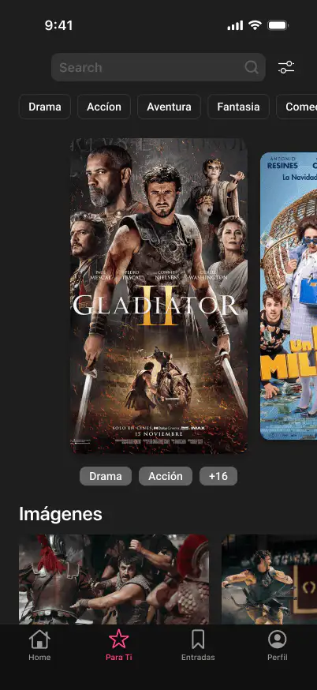
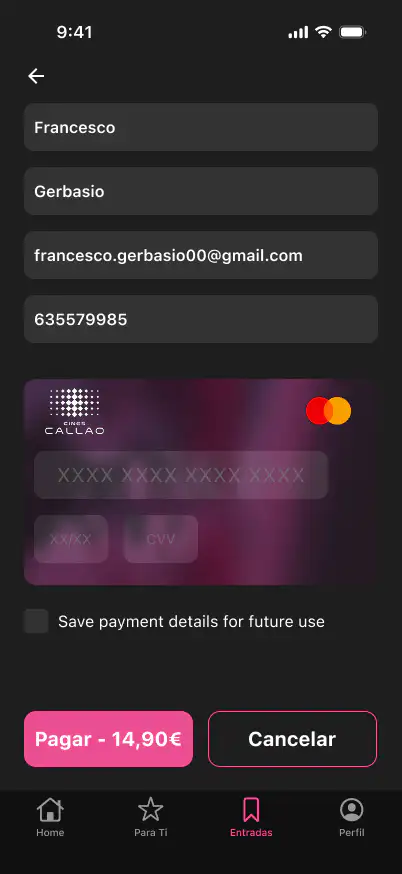
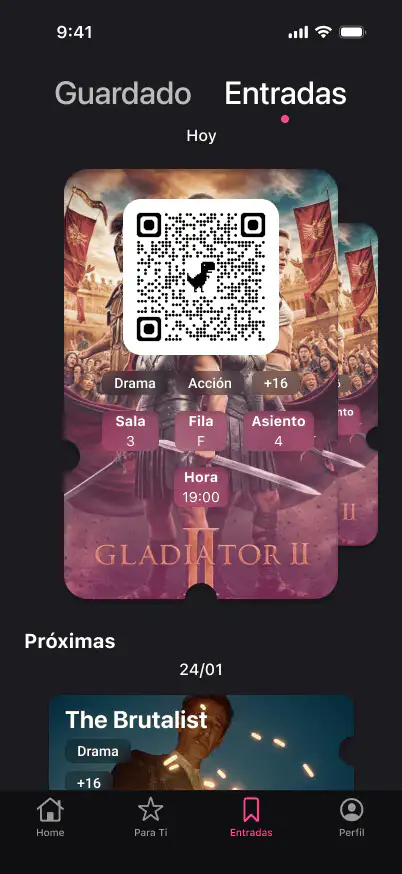

Personal Project · UX/UI · iOS App · 2025
Cines Callao
A beloved cinema, a frustrating experience.
Cines Callao is one of Madrid's most iconic cultural landmarks. Yet its digital experience hadn't kept pace. As a Madrid resident and regular cinema-goer, I kept running into the same frustrations: showtimes buried behind multiple taps, a booking flow that felt transactional rather than exciting, and digital tickets nobody trusted.
This personal project explores how a mobile-first redesign could address those pain points through simplified navigation, improved schedule visibility, and a booking experience that feels like it belongs to a premium cinema — not a generic template.
4 patterns that shaped everything.
Rather than conducting formal user interviews, I relied on heuristic evaluation of the existing app, competitive analysis of cinema apps in Spain and abroad, and my own experience as a regular user. The patterns that emerged were consistent with common usability failures in entertainment booking apps.
From sticky notes to flows that breathe.
Define
Jobs to be done
Synthesised research into 3 primary JTBDs: browse movies, find a showtime fast, book with confidence. Cut every feature that didn't map to a real job.
Explore
8 information architectures
Low-fidelity IA sketches evaluated through heuristic review. Discarded movie-first nav in favour of dual entry — browse by film OR by showtime.
Build
Component system first
Built an atomic design system in Figma before any screens. Tokens for spacing, type, and colour ensured any change cascaded across 40+ artboards. WCAG AA contrast ratios baked into every token. Touch targets audited against 44×44px minimum. Screen reader labels planned for every interactive element.
Multilingual
Designed for Spanish, English, and Italian
Cinema terminology varies significantly across languages — "butaca" (ES) vs. "seat" (EN) vs. "posto" (IT). Labels and date formats account for text expansion and locale conventions. Time formats use 24h for Spanish/Italian, 12h for English.



Browse Showtimes Digital ticket
In a real-world scenario, I would validate these designs with moderated usability testing with regular cinema-goers in Madrid, A/B testing the dual-entry navigation against the original linear flow, and accessibility audits with screen reader users. I would also test the multilingual interface with native Spanish, English, and Italian speakers to catch truncation and cultural misalignment.
See it in motion.
The interactive Figma prototype walks the full booking journey — browse, seat selection, payment, and digital ticket.
View Figma Prototype